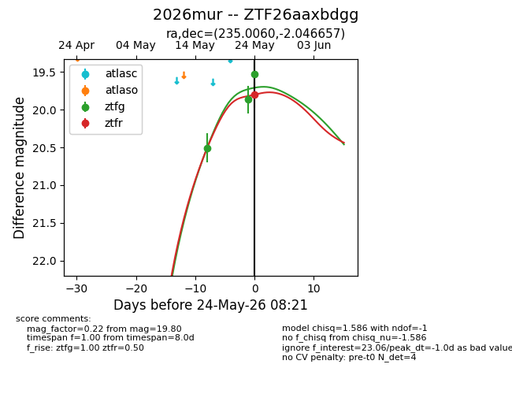
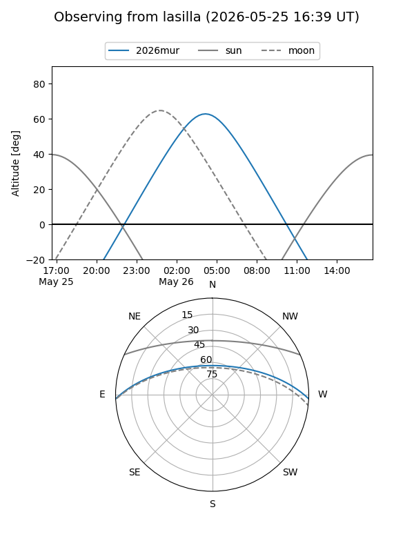
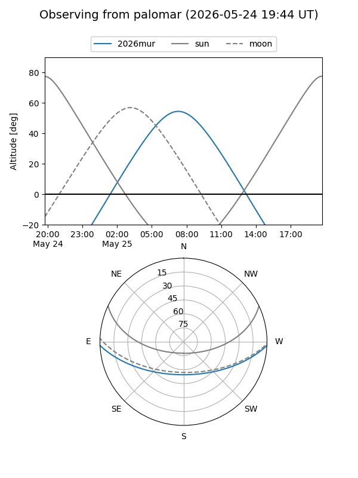
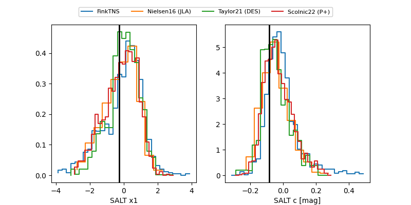

2026mur
Target 2026mur at 2026-05-24 08:23
Aliases and brokers:
lsst-FINK: link
lsst-Lasair: link
lsst-ALeRCE: link
ztf-FINK: link
ztf-Lasair: link
ztf-ALeRCE: link
TNS: link
YSE: link
alt names
ZTF26aaxbdgg (ztf,fink_ztf)
2026mur (tns,yse)
Coordinates:
equatorial (ra, dec) = 235.0060,-2.04666
equatorial (HMS+DMS) = 15:40:01.44,-02:02:47.97
galactic (l, b) = (4.0674,+40.02782)
Flags:
Photometry:
last ztfg=19.53, ztfr=19.80
3 ztfg, 1 ztfr detections
Lightcurve

Visibility


Additional plots
